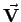
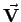

Inhalt Index DeskTop Bronstein

 Vektoranalysis und Feldtheorie Grundbegriffe der Feldtheorie Vektorfelder Koordinatendarstellung von Vektorfeldern
Vektoranalysis und Feldtheorie Grundbegriffe der Feldtheorie Vektorfelder Koordinatendarstellung von Vektorfeldern


Das Vektorfeld (13.12a) kann mit Hilfe dreier skalarer Felder und  definiert werden, die als Koeffizienten des Vektors  bei seiner Zerlegung in drei beliebige inkomplanare Vektoren aufzufassen sind:
definiert werden, die als Koeffizienten des Vektors  bei seiner Zerlegung in drei beliebige inkomplanare Vektoren aufzufassen sind:
| (13.16a) |
Wählt man für diese drei Vektoren die Einheitsvektoren der drei Koordinatenachsen , und drückt man die Koeffizienten V1, V2, V3 in kartesischen Koordinaten aus, dann gilt
| (13.16b) |
Somit kann das Vektorfeld mit Hilfe dreier skalarer Funktionen von drei skalaren Veränderlichen definiert werden.